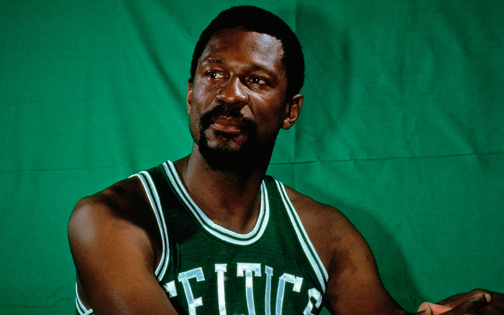
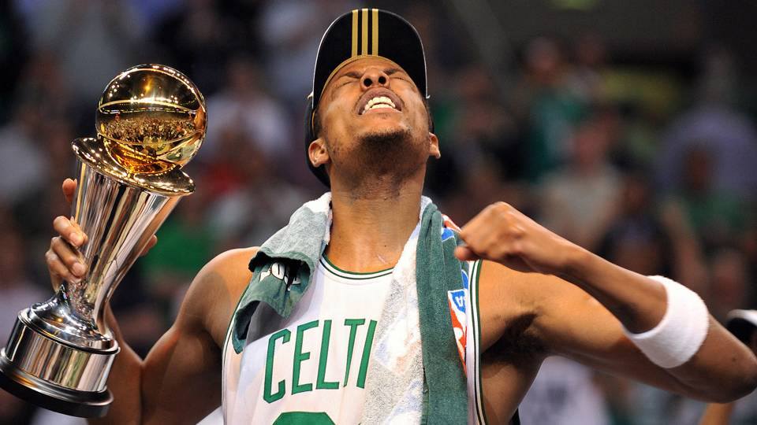

BILL RUSSEL ERA
1957-1969

With Bill Russell, the Celtics advanced to the 1957 NBA Finals and defeated the St. Louis Hawks in seven games, giving the Celtics the first of their record 17 championships. Russell went on to win 11 championships, making him the most decorated player in NBA history. In 1958, the Celtics again advanced to the NBA Finals, this time losing to the Hawks in 6 games. However, with the acquisition of K.C. Jones that year, the Celtics began a dynasty that would last for more than a decade. In 1959, the Celtics won the NBA Championship after sweeping the Minneapolis Lakers, the first of their record eight consecutive championships. During that time, the Celtics met the Lakers in the Finals five times, starting an intense and often bitter rivalry that has spanned generations. In 1964, the Celtics became the first NBA team to have an all African-American starting lineup. On December 26, 1964, Willie Naulls replaced an injured Tommy Heinsohn, joining Tom 'Satch' Sanders, K.C. Jones, Sam Jones, and Bill Russell in the starting lineup. The Celtics defeated St. Louis 97–84. Boston won its next 11 games with Naulls starting in place of Heinsohn. The Celtics of the late-1950s–1960s are widely considered as one of the most dominant teams of all time.
Auerbach retired as coach after the 1965–66 season and Russell took over as player-coach, which was Auerbach's ploy to keep Russell interested. With his appointment, Russell also became the first African-American coach in any U.S. pro sport. Auerbach would remain the general manager, a position he would hold well into the 1980s. However, that year the Celtics' string of NBA titles was broken as they lost to the Philadelphia 76ers in the Eastern Conference Finals. The aging team managed two more championships in 1968 and 1969, defeating the Los Angeles Lakers each time in the NBA Finals. Russell retired after the 1969 season, effectively ending a dominant Celtics dynasty that had garnered 11 NBA titles in 13 seasons. The streak of 8 consecutive championships is the longest streak of consecutive championships in U.S. professional sports history.
LARRY BIRD ERA
1979-1992

The Celtics owned two of the top eight picks in the 1978 NBA draft. Since the Celtics had two draft choices, Auerbach took a risk and selected junior Larry Bird of Indiana State with the 6th pick, knowing Bird would elect to remain in college for his senior year. The Celtics would retain his rights for one year—a rule that was later changed—and Auerbach believed Bird's potential would make it worth the wait. Auerbach also felt that when the college season ended the Celtics would have a great chance to sign Bird. Auerbach was right and Bird signed soon after leading Indiana State to the NCAA Championship game, where they fell to a Michigan State University team. (The other pick was Freeman Williams, who was traded before the 1978–79 season began.)
Bird debuted for the Celtics during the 1979–80 season, a year after being drafted. With a new owner in place, Auerbach made a number of moves that would bring the team back to prominence. He almost immediately traded McAdoo, a former NBA scoring champion, to the Detroit Pistons for guard M. L. Carr, a defensive specialist, and two first-round picks in the 1980 NBA draft. He also picked up point guard Gerald Henderson from the CBA. Carr, Archibald, Henderson and Ford formed a highly competent backcourt, with their unique skills blending in perfectly with the talented frontcourt of Cowens, Maxwell and Bird, who would go on to win NBA Rookie of the Year honors. The Celtics improved by 32 games, which at the time was the best single-season turnaround in NBA history, going 61–21 and losing to the Philadelphia 76ers in the Eastern Conference Finals. That record was later broken by the Celtics about 30 years later.
Under Ford's leadership the Celtics improved to 56–26 in 1990–91, recapturing the Atlantic Division title even though Bird missed 22 games with a variety of injuries. The Celtics fell to the Detroit Pistons in the Eastern Conference Semifinals. In 1992, a late season rally allowed the Celtics to catch the New York Knicks and repeat as Atlantic Division champions. The team finished 51–31 and matched up with the Indiana Pacers in the First round, this time sweeping the series. In the Eastern Conference Semifinals the Celtics lost a grueling 7 game series to the Cleveland Cavaliers. Due to back problems, Larry Bird played in only 45 of the 82 regular season games, and only 4 of the 10 playoff games; during games he was frequently lying on the floor when out of the lineup, instead of sitting on the bench. After 13 seasons with the club and winning a gold medal in the Barcelona Olympics with the Dream Team, Bird retired in 1992, primarily due to his back injuries. Among his lasting contributions to the game was the "Bird exception", which allows teams to exceed the salary cap to re-sign their own free agents, at an amount up to the maximum salary.
PAUL PIERCE ERA
1998-2013

The following year in the 1998 NBA draft, the Celtics drafted Paul Pierce, a college star who had been expected to be drafted much earlier than the Celtics' 10th overall pick. Pierce had an immediate impact during the lockout-shortened 1998–99 NBA season, averaging 19.5 points and being named Rookie of The Month in February as he led the league in steals. However, the Celtics continued to struggle as Pitino failed to achieve meaningful success. After Boston lost to the Toronto Raptors on March 1, 2000, on a buzzer-beater by Vince Carter, Pitino delivered the memorable "Larry Bird is not walking through that door, fans" speech. He resigned in January 2001.
Following the resignation of Rick Pitino, the Celtics saw modest improvement under coach Jim O'Brien. Paul Pierce matured into an NBA star and was ably complemented by Antoine Walker and the other players acquired over the years. While the team was 12–21 when Pitino left, O'Brien's record to finish the season was 24–24. Following the 2000–01 season O'Brien was given the job of head coach on a permanent basis. As a result of numerous trades, the Celtics had three picks in the 2001 NBA draft. They selected Joe Johnson, Joe Forte, and Kedrick Brown. Only Johnson managed to succeed in the NBA, becoming a perennial All-Star after leaving the Celtics.
In 2003, the Celtics were sold by owner Paul Gaston to Boston Basketball Partners L.L.C., led by H. Irving Grousbeck, Wycliffe Grousbeck and Steve Pagliuca. The team made it back to the playoffs but were swept by the Nets in the second round, despite bringing Game 4 to double overtime. Before their elimination, the team hired former Celtics' guard Danny Ainge as general manager, moving Chris Wallace to another position in the organization. Ainge believed the team had reached its peak and promptly sent Antoine Walker to the Dallas Mavericks (along with Tony Delk). In return, the Celtics received the often-injured Raef LaFrentz, Chris Mills, Jiří Welsch, and a first-round pick in 2004. The Celtics made the playoffs, only to be swept in the first round by the Indiana Pacers, losing all 4 games by blowout margins.